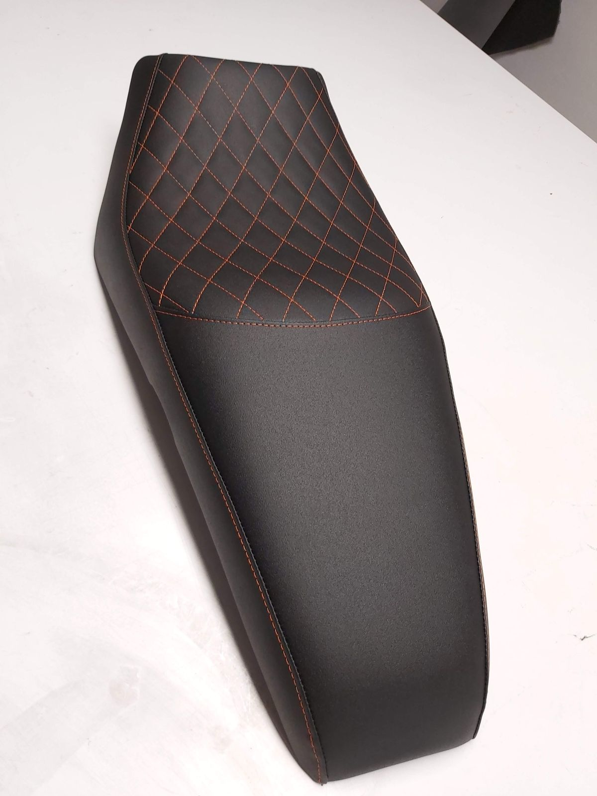
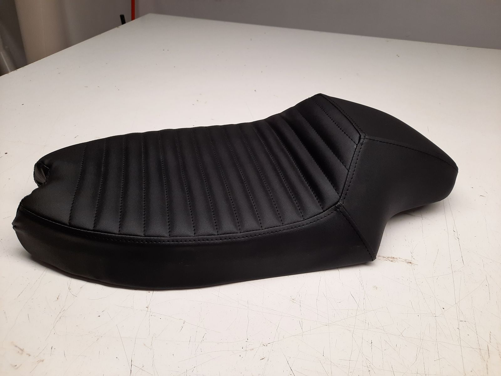
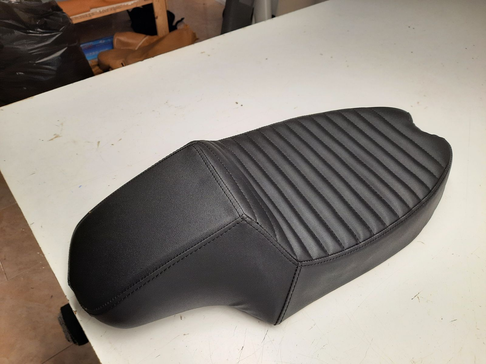
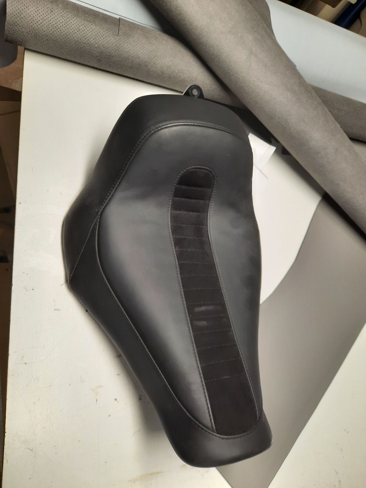
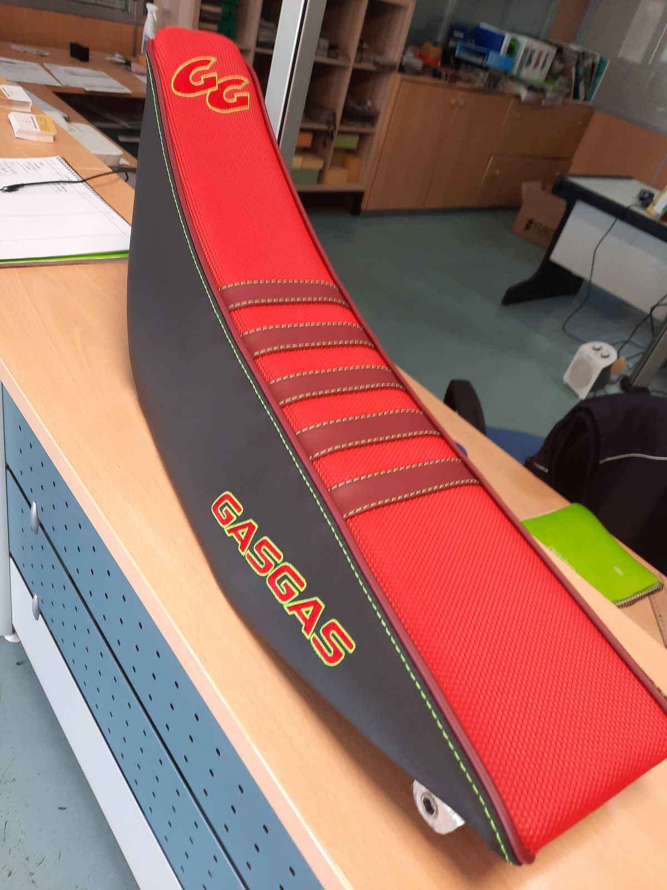

Home / Motorcycle seats
Split, uncomfortable or simply not your style: we re-cover your seat with the pattern, stitching and colours you want.
Workshop in Benejúzar, in the Vega Baja.
Send a video on WhatsApp: the assessment is free and we reply the same working day.
A split motorcycle seat lets water into the foam, and an uncomfortable one makes every ride feel long. We reupholster your seat with the pattern, stitching and colours you want, from a standard seat to a custom project.
We make pleated café racer seats, diamond stitching, enduro seats with grip panels and repairs to split covers. If you have an idea, send us a photo or a sketch. Riders bring us seats from Orihuela, Torrevieja, Almoradí, Guardamar, Elche and the whole Vega Baja.
A new seat can also be more comfortable. If your seat bothers you on long rides, tell us in the video and we'll look with you at what can be changed in the shape or the foam. And if you are building a custom bike or a café racer, the seat is the part that gives it its final character.
We work with leather and materials that stand up to sun and rain, and with grip panels for enduro and off-road seats. You can combine colours and choose the stitching style: pleats, diamonds or your own design.





Yes, you can bring just the seat to our workshop in Benejúzar. Send us a video first and we'll tell you what we need.
Yes. Send us a photo or sketch of what you want together with a video of the seat.
No. Just the seat. You can bring it removed to our workshop.
Send us a video of the damage and we'll tell you whether it can be repaired or whether it is better to reupholster the whole seat.
Yes. Send us a video or a photo of the seat and we'll tell you how we would do it.
We work across the Vega Baja and surroundings. Further away? Send a video and we'll tell you whether we can help.
Show us what needs doing and we'll take it from there.